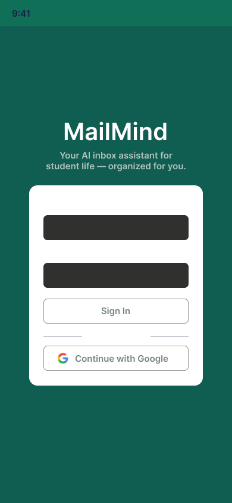
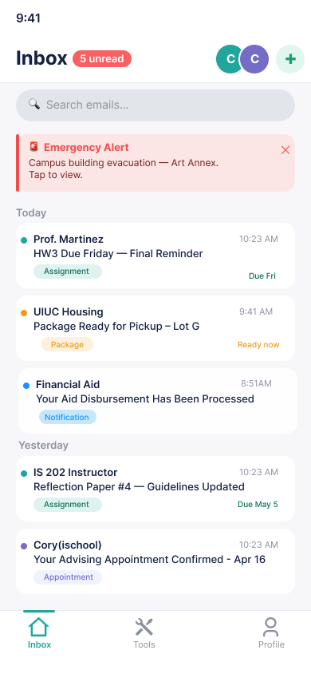
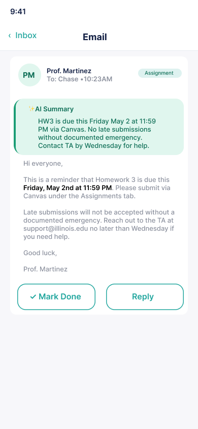
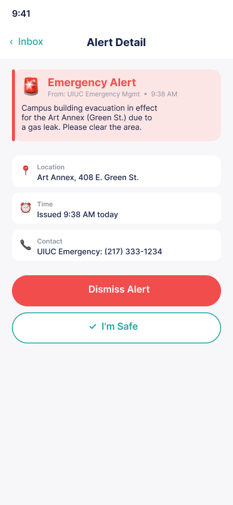
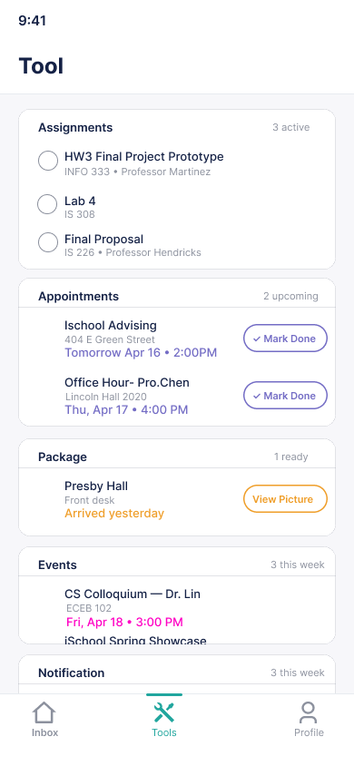
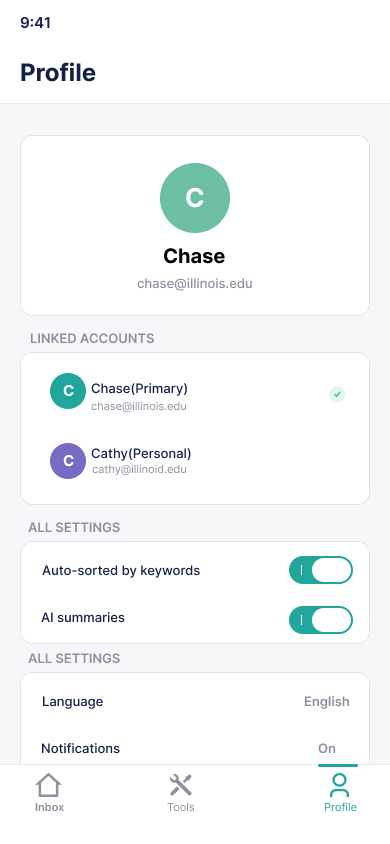
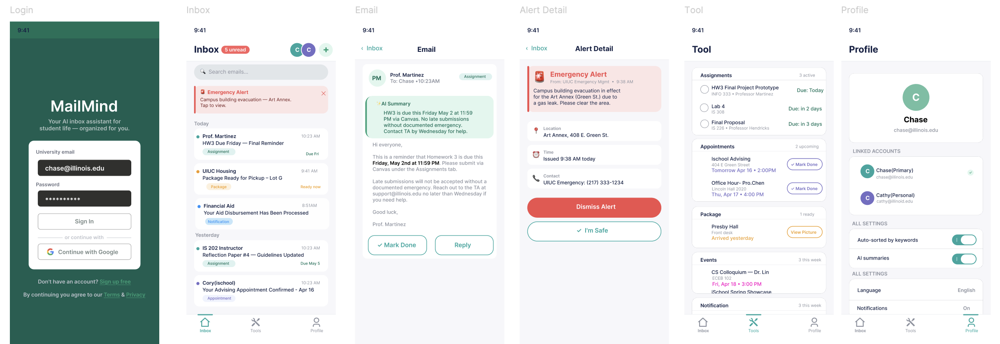
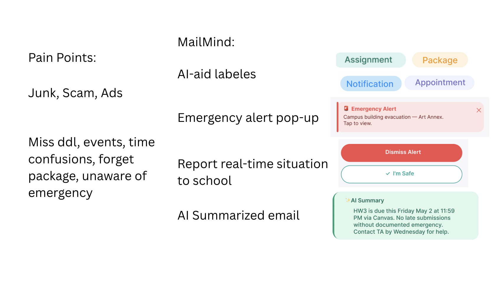
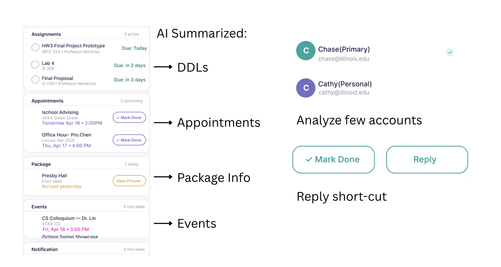

MAILMIND
A student inbox that sorts itself: deadlines, package pickups and alerts pulled out automatically and gathered into one list.
A campus emergency and a dining newsletter look identical
College students get dozens of emails a day — professors, university offices, student orgs — mixed with ads, scam alerts and low-priority notices. A standard client gives a campus emergency and a dining hall newsletter exactly the same visual weight.
Important emails get buried under promotions. Students miss deadlines not because they forgot, but because the email never stood out.
There is no way to tell at a glance what actually needs attention right now.
Long emails hide one useful sentence — a due date, a room number. The information is there; finding it isn't.
Superhuman and Fyxer AI cost over $20/month and are built for working professionals, not students on a budget.
We asked classmates and professors
Two questions: which emails do you miss most often, and what would you want your inbox to surface for you? Professors added the other side of it — students miss deadline reminders even when they are emailed several times.
Three versions, one question each
Mapped the feature set and information architecture on paper. The question: which categories do students actually need surfaced? We landed on five — Assignments, Appointments, Packages, Events, Notifications.
Layout and module structure: how much a card should show at a glance, where the AI summary sits relative to the body, how an emergency alert interrupts without becoming annoying.
Six screens — login, inbox, email detail, alert detail, tool dashboard, profile — fully clickable for a live demo at the Lightning Talk.
Six screens, the whole prototype









Four decisions carry the product
Teal for assignments, orange for packages, blue for notifications, purple for appointments — scannable without reading a single subject line.
Emergency alerts pin above the inbox. Getting the visual weight right — urgent enough to interrupt, not so alarming people dismiss it — took more iteration than any other component.
Sits at the top of each email with just the actionable part extracted from the body. You see what to do before deciding to read.
Aggregates every deadline, appointment, package and event across linked accounts in one view. The feature that tested highest.
May 2026, iSchool Lightning Talk
Presented to students, faculty and design peers. Feedback landed on the AI summary as the highest-value piece, especially for long emails from professors and administration. We also built a partial implementation with Cursor and React — the front end worked, but Google OAuth verification never cleared inside the course timeline, which became its own lesson.